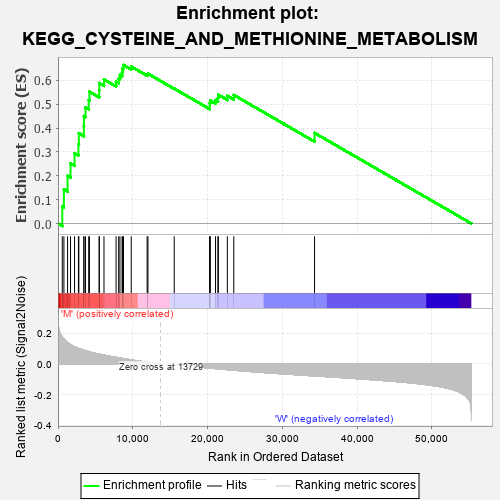
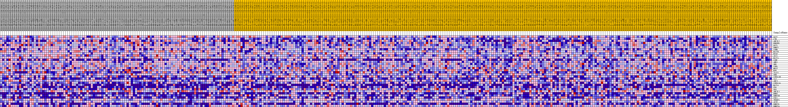
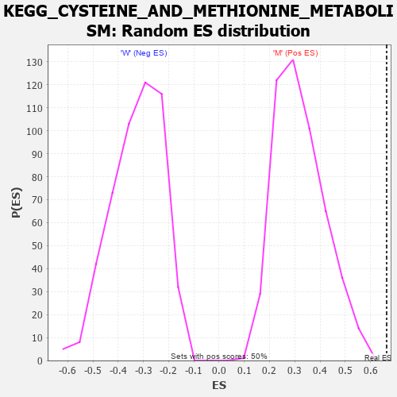

| Dataset | MUC16.MUC16.cls#M_versus_W.MUC16.cls#M_versus_W_repos |
| Phenotype | MUC16.cls#M_versus_W_repos |
| Upregulated in class | M |
| GeneSet | KEGG_CYSTEINE_AND_METHIONINE_METABOLISM |
| Enrichment Score (ES) | 0.6642046 |
| Normalized Enrichment Score (NES) | 2.0631185 |
| Nominal p-value | 0.0 |
| FDR q-value | 0.03663954 |
| FWER p-Value | 0.036 |

| PROBE | DESCRIPTION (from dataset) | GENE SYMBOL | GENE_TITLE | RANK IN GENE LIST | RANK METRIC SCORE | RUNNING ES | CORE ENRICHMENT | |
|---|---|---|---|---|---|---|---|---|
| 1 | GOT2 | na | 570 | 0.175 | 0.0717 | Yes | ||
| 2 | CTH | na | 789 | 0.161 | 0.1434 | Yes | ||
| 3 | AHCYL2 | na | 1280 | 0.139 | 0.1998 | Yes | ||
| 4 | ENOPH1 | na | 1677 | 0.126 | 0.2517 | Yes | ||
| 5 | GOT1 | na | 2211 | 0.111 | 0.2944 | Yes | ||
| 6 | DNMT1 | na | 2729 | 0.101 | 0.3325 | Yes | ||
| 7 | LDHB | na | 2788 | 0.100 | 0.3785 | Yes | ||
| 8 | MAT2B | na | 3458 | 0.090 | 0.4084 | Yes | ||
| 9 | MTAP | na | 3469 | 0.089 | 0.4502 | Yes | ||
| 10 | ADI1 | na | 3681 | 0.086 | 0.4868 | Yes | ||
| 11 | MAT2A | na | 4107 | 0.081 | 0.5169 | Yes | ||
| 12 | LDHC | na | 4205 | 0.079 | 0.5524 | Yes | ||
| 13 | AMD1 | na | 5505 | 0.064 | 0.5588 | Yes | ||
| 14 | SMS | na | 5517 | 0.064 | 0.5884 | Yes | ||
| 15 | LDHA | na | 6149 | 0.057 | 0.6038 | Yes | ||
| 16 | MPST | na | 7769 | 0.043 | 0.5947 | Yes | ||
| 17 | MTR | na | 8112 | 0.040 | 0.6074 | Yes | ||
| 18 | IL4I1 | na | 8283 | 0.039 | 0.6226 | Yes | ||
| 19 | SRM | na | 8571 | 0.036 | 0.6344 | Yes | ||
| 20 | LDHAL6B | na | 8628 | 0.036 | 0.6502 | Yes | ||
| 21 | TAT | na | 8755 | 0.035 | 0.6642 | Yes | ||
| 22 | AHCY | na | 9795 | 0.026 | 0.6578 | No | ||
| 23 | LDHAL6A | na | 11917 | 0.012 | 0.6248 | No | ||
| 24 | MAT1A | na | 12026 | 0.011 | 0.6280 | No | ||
| 25 | CBS | na | 15540 | -0.002 | 0.5655 | No | ||
| 26 | SDS | na | 20285 | -0.026 | 0.4920 | No | ||
| 27 | AHCYL1 | na | 20286 | -0.026 | 0.5044 | No | ||
| 28 | BHMT | na | 20355 | -0.027 | 0.5157 | No | ||
| 29 | DNMT3B | na | 21065 | -0.030 | 0.5169 | No | ||
| 30 | CDO1 | na | 21382 | -0.031 | 0.5259 | No | ||
| 31 | TRDMT1 | na | 21436 | -0.032 | 0.5398 | No | ||
| 32 | APIP | na | 22642 | -0.037 | 0.5353 | No | ||
| 33 | DNMT3L | na | 23506 | -0.040 | 0.5386 | No | ||
| 34 | DNMT3A | na | 34302 | -0.078 | 0.3796 | No |

